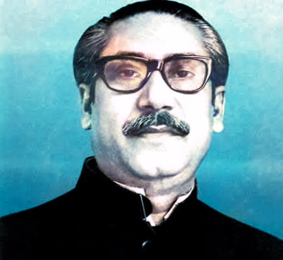

আপনি আমাদের ই-মেইল পাঠাতে পারেন - lets.code.the.future@gmail.com।
একাধিক ভাষা! ভাষা পরিবর্তন করতে আপনার প্রিয় ভাষায় আমাদের ওয়েবসাইটটি দেখুন নেভ বার থেকে ভাষা বিকল্পে আলতো চাপুন।
ই-মেইল! আপনি আমাদের ই-মেইল পাঠাতে পারেন - lets.code.the.future@gmail.com।

শেখ মুজিবুর রহমানের জীবনের কয়েকটি বড় ইভেন্টের টাইমলাইন।
. ১৯৩৪
- চোখের আঘাত তাকে প্রায় অন্ধ করে তোলে।
.১৯৩৯
-প্রথমবারের মতো শেরেবাংলা একে ফজলুল হক ও হুসেন মুরতাদ সোহরাওয়ার্দীর সাথে দেখা
. ১৯৩২
- (সরকারীভাবে) কাজিন বেগম ফজিলাতুন্নেছাকে বিয়ে করেছেন
.৪ জানুয়ারী ১৯৪৮
- পূর্ব পাকিস্তান মুসলিম ছাত্র (ছাত্র) লীগ সহ-সন্ধান করে
. ১৭ মার্চ ১৯৪৮
-ঢাকা বিশ্ববিদ্যালয়ের কর্মচারী অধিকারের জন্য সমর্থন
. ২৬ মার্চ ১৯৪৯
- ঢাকা বিশ্ববিদ্যালয় থেকে বহিষ্কার
. ২৩ জুন ১৯৪৯
- নবগঠিত পূর্ব পাকিস্তান আওয়ামী মুসলিম লীগের যুগ্ম সম্পাদক নিযুক্ত হন
. ৪ ফেব্রুয়ারী ১৯৫২
- ভাষা আন্দোলন চলাকালীন জেল থেকে ক্ষুধার্ত ধর্মঘট
. ১৯৫৪ সালের জুনে
- জোট ফ্রন্ট নির্বাচনে বিজয়ী হওয়ার পরের ৭ মাসের জন্য জেল হয়েছিল
. ২১ অক্টোবর ১৯৫৫ - ১৯৬৬
- আওয়ামী লীগের পুনঃনির্বাচিত সাধারণ সম্পাদক
.১১ অক্টোবর ১৯৫৮
- ১৪ মাস ধরে রাজনৈতিক বন্দী হিসাবে রয়েছেন
. ১ মার্চ ১৯৬৬
- আওয়ামী লীগের নির্বাচিত রাষ্ট্রপতি
. ১৯৬৬
- ৬-দফা (ছয় দফার আন্দোলনের) পক্ষে থাকার জন্য অসংখ্যবার গ্রেপ্তার
. ১৯৬৮ - ২২ ফেব্রুয়ারি ১৯৬৯
- 'আগরতলা শরজন্ত্রো মামলা' (আগরতলা ষড়যন্ত্র মামলা) এ গ্রেপ্তার এবং বিচারের চেষ্টা
. ২৩ ফেব্রুয়ারি ১৯৬৯
- তোফায়েল আহমেদ "বঙ্গবন্ধু" (বাংলার বন্ধু) এর সম্মাননা উপাধি দিয়েছিলেন
. ৭ ডিসেম্বর ১৯৭০
-সাধারণ নির্বাচনে আওয়ামী লীগকে বিস্তীর্ণ নেতৃত্বের নেতৃত্ব দেয়
. ৭ ইমার্চ ১৯৭১
- রেসকোর্সে ময়দানে "ঐইতিহাসিক ভাষণ "এবারের সংগ্রাম" ভাসন দেন ভাষণে এক মিলিয়নেরও বেশি বাঙালি আসে।
. ২৬ শে মার্চ ১৯৭১
- মুক্তিযুদ্ধের শুরুতেই গ্রেপ্তার হয়েছিল এবং সাড়ে নয় মাস পশ্চিম পাকিস্তানের কারাগারে বন্দি ছিল
. ৪ জানুয়ারী ১৯৭২
- পাকিস্তানের কারাগার থেকে মুক্তি পেয়েছিল। দু'দিন পরে স্বাধীন বাংলাদেশে ফিরে আসে
. ১২ জানুয়ারী ১৯৭২
- রাষ্ট্রপতি হিসাবে পদত্যাগ করেন এবং প্রধানমন্ত্রী হন
. ১৯৭৩
- বাংলাদেশের প্রথম সাধারণ নির্বাচনে আওয়ামী লীগকে বিজয়ী করে তোলে
. ২৪ সেপ্টেম্বর ১৯৭৪
- বাংলায় জাতিসংঘের সাধারণ পরিষদের ঠিকানা
.২৫ জানুয়ারী ১৯৭৫
- স্ব-নিযুক্ত রাষ্ট্রপতি হন এবং বাক্সালের সাথে সমস্ত রাজনৈতিক দলকে প্রতিস্থাপন করেন
. ১৫ আগস্ট ১৯৭৫
- ধানমন্ডি শহরে তার পরিবারের বেশিরভাগ সদস্যকে হত্যা করা হয়
ওয়েবসাইট দেখার জন্য ধন্যবাদ!